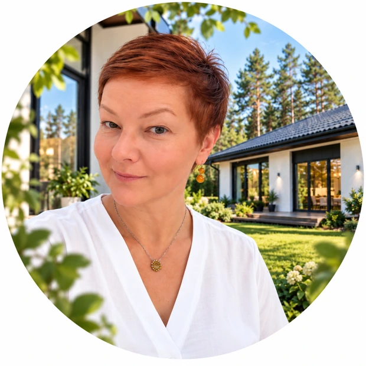
Юлия Корюкова
Ваш проводник в загородной недвижимости
Больше 10 лет работаю с загородной недвижимостью Екатеринбурга. Сама живу за городом и помогаю найти дом, в котором будет удобно именно вам.
Помогу с оформлением ипотеки — бесплатно.
КП «Яснолетово» · Московский тракт
До ТРЦ «МЕГА» · ≈ 20 мин
14 088 800 ₽
- Площадь дома
- 196 м²
- Участок
- 7 соток
- Отделка
- White Box
- Спален
- 3
- Санузлов
- 2
Детали
Дом в КП «Яснолетово»
Три спальни, кухня-гостиная с выходом на террасу и мансарда, которую можно обустроить для отдыха.
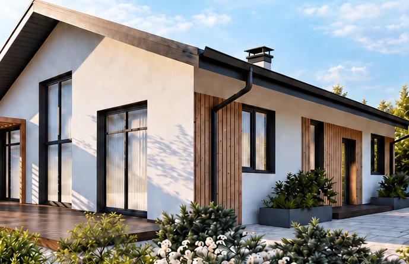
В этом доме хочется поднять глаза… и остаться.
Второй свет, панорамное остекление и ощущение простора, которое сложно передать фотографиями. Здесь гостиная становится сердцем дома — местом, где приятно собираться всей семьёй, встречать друзей и проводить вечера.
Готовый дом в КП «Яснолетово» — направление Московского тракта, 20 минут до ТРЦ «МЕГА».
А ещё здесь есть мансарда 40 м². И это отдельная история!
Домашний кинотеатр? Игровая для детей? Мастерская или место для йоги? Представьте, что для любимого занятия у вас наконец появилась целая комната.
Что ещё предусмотрено для вашей семьи:
196 м² — площадь дома, участок 7 соток.
Дом готов в отделке White Box, под чистовую.
В посёлке — охраняемая территория, асфальтированный подъезд, детская площадка и зоны отдыха.
Стоимость — 14 088 800 ₽.
Мне нравятся дома, в которых есть своя особенность. Здесь это сочетание света, объёма и пространства для увлечений.

На первом этаже три спальни, два санузла и котельная. На мансарде — отдельная комната 40 м².
 Открыть планировку ↗
Открыть планировку ↗КП «Зелёные кварталы» · Тюменский тракт
12 700 000 ₽
- Площадь дома
- 124 м²
- Участок
- 7,7 сотки
- Отделка
- White Box
- Спален
- 3
- Санузлов
- 2
Детали
КП «Зелёные кварталы» · Тюменский тракт · Под строительство
SHiLO 124 м²
Три спальни, кухня-гостиная с выходом на террасу и мастер-спальня со своим санузлом.
Одноэтажный дом в комплектации White Box. Три спальни, включая мастер-спальню со своим санузлом, кухня-гостиная 36,3 м² и терраса 18 м².
13 800 000 ₽ · Выгода 1 100 000 ₽ до 31 декабря 2026 года.
Расчёт за дом с участком 7,7 сотки. Участки по ул. Тимирязева, 9, 11, 13, 14, 15 и 16. Средняя стоимость участка — 3 300 000 ₽.
Уточнить условия в Telegram ↗
Как воспользоваться акцией
- До 31 декабря заключите основной договор и внесите первый транш. Землю оформляют на покупателя при сделке.
- Если сделка планируется на следующий год, можно до 31 декабря заключить авансовый договор и внести 1 500 000 ₽. Аванс фиксирует стоимость строительства и позволяет закупить материалы.
При авансе цена участка подлежит уточнению на дату сделки. При изменении цены земли итоговая стоимость дома с участком может измениться.
Цены указаны на момент публикации.
 Открыть планировку SHiLO ↗
Открыть планировку SHiLO ↗
Фасад и интерьер


КП «Лесные улочки» · п. Бобровский
16 000 000 ₽
- Площадь дома
- 141 м²
- Участок
- 8,25 сотки
- Отделка
- Под ключ
- Спален
- 3
- Санузлов
- 2
Детали
КП «Лесные улочки» · п. Бобровский · Готовый дом
Дом 141 м²
Три спальни, кухня-гостиная 47,1 м² и терраса для отдыха всей семьёй.
- Терраса
- 22,5 м²
Участок — 8,25 сотки. Три спальни, включая мастер-спальню со своим санузлом. Кухня-гостиная 47,1 м² с выходом на террасу 22,5 м².
Отделка под ключ входит в стоимость. Окончательная цена. Оплата наличными или в ипотеку.
При сделке до 30 ноября 2026 года ремонт планируем завершить до 15 декабря. Можно запланировать переезд к Новому году.
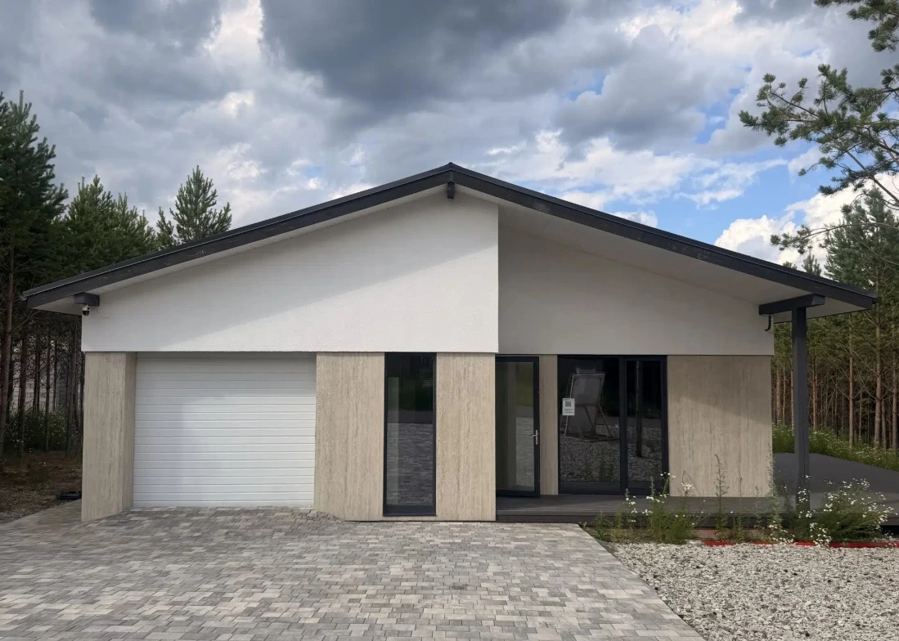
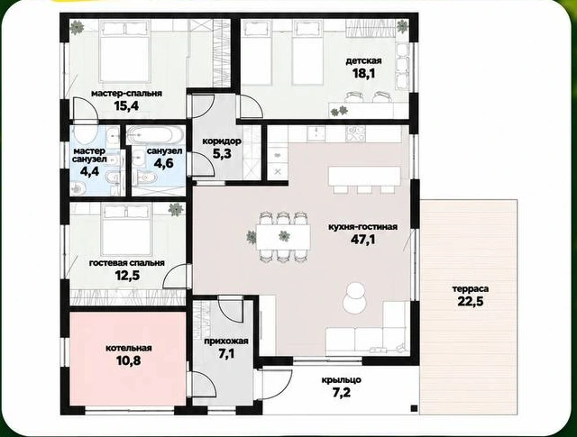
Открыть планировку ↗Видеообзор дома
Терраса и фасад
КП «КраСоты» · 2 км от Двуреченска
27 100 000 ₽
- Площадь дома
- 200 м²
- Участок
- 7,7 сотки
- Отделка
- Под тапочки
- Спален
- 3
- Санузлов
- 2
Детали
HELEN HOUSE 120
Три спальни, кабинет и просторная кухня-гостиная с высоким потолком и панорамным угловым окном.
Высокий потолок, свет из мансардных окон и панорамное угловое остекление. Дом, в котором архитектуру дополняют продуманная инженерия и благоустроенный участок.
Отделка «под тапочки». Одноэтажный дом площадью 200 м² на участке 7,7 сотки. Три спальни, кабинет, два санузла и просторная кухня-гостиная с кладовой. Терраса — 80 м².
Записаться на просмотрВидеообзор дома
10 деталей, которые стоит увидеть поближе
Панорамное угловое окно
Открывает вид на природу и наполняет кухню-гостиную естественным светом.
Мансардные окна
Дополнительный свет сверху подчёркивает высокий потолок кухни-гостиной.
Вентиляция TURKOV
Система постоянного воздухообмена помогает поддерживать свежий воздух в доме.
Система «Умный дом»
Управление температурой и микроклиматом.
Терраса со стеклянным навесом
Навес из закалённого стекла пропускает естественный свет.
Потолок из натуральной лиственницы
Тёплая фактура дерева в интерьере кухни-гостиной.
Гараж-навес с местом для хранения
Предусмотрена возможность организовать хозяйственный блок.
Входная дверь ХАСКИ
Дверь от «Стальной линии» с усиленной теплоизоляцией.
Ландшафтный дизайн
Благоустройство участка сочетается с архитектурой дома.
Собственная воркаут-зона
Место для тренировок на свежем воздухе.
с. Патруши · Южное направление
13 900 000 ₽
- Площадь дома
- 146,8 м²
- Участок
- 7,34 сотки
- Отделка
- Под ключ
- Спален
- 3
- Санузлов
- 2
Детали
Дом-шале 146,8 м²
Три спальни, камин в гостиной, крытая терраса и угловой участок на тупиковой улице.
Камин в гостиной, крытая терраса и угловой участок на тупиковой улице.
Село Патруши, Сысертский муниципальный округ. Южное направление, 10 км от границы Екатеринбурга. Подъезд по Челябинскому или Арамильскому тракту.
Отделка под ключ. Три спальни, кухня-гостиная, два санузла и котельная. Участок ИЖС — 7,34 сотки. Есть возможность второго въезда и размещения дополнительных построек.
Записаться на просмотрО доме и коммуникациях
Камин и инженерия
Каминная топка «Альфа 700 RB» от «Экокамин», два стекла, чёрный шамот. Выполнены инженерные системы и обустроена котельная.
Электричество — 15 кВт, 380 В. Индивидуальная скважина, бетонный септик СК «Урал».
Материалы и конструкция
Свайно-ростверковый фундамент, дополнительные бетонные опоры плиты, стальная арматура и полусухая стяжка.
Стены из твинблока 300 мм с утеплением минеральной ватой 100 мм. Штукатурка «короед», окраска и отделка планкеном.
Кровля из металлочерепицы, утепление минеральной ватой 200 мм. Огнебиозащита пиломатериалов, водостоки и отмостка. Крытая терраса и крыльцо с отделкой планкеном.
Инфраструктура
В шаговой доступности — торговый центр с сетевым магазином, школа, детские сады, пункты выдачи, банкоматы и автобусная остановка. Рядом Арамиль и Бородулино.
КП «КраСоты» · 2 км от Двуреченска
14 500 000 ₽
- Площадь дома
- 149 м²
- Участок
- 8,5 сотки
- Отделка
- Под ключ
- Спален
- 3
- Санузлов
- 2
Детали
BARNHOUSE 130
Три спальни, мастер-спальня со своим санузлом и гардеробной. Панорамные окна, второй свет и выход из кухни-гостиной на террасу.
Готовый дом в КП «КраСоты», в 2 км от Двуреченска. Кухня-гостиная с панорамным остеклением и вторым светом выходит на террасу. Три спальни, включая мастер-спальню с собственным санузлом и гардеробной.
Мне нравится, что из кухни-гостиной можно сразу выйти на террасу. Когда обедаешь на улице, всё равно раза три возвращаешься на кухню. То за солью, то за ножом, то за солью, за которой уже ходила 🙂
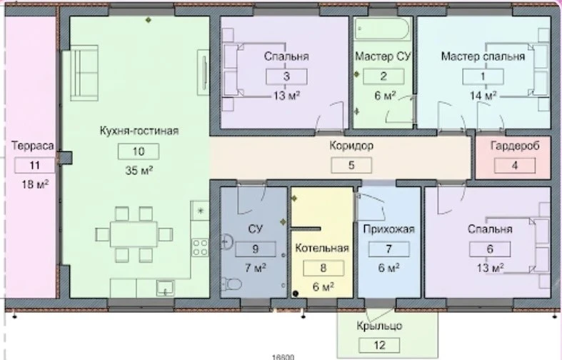
Открыть планировкуЕсли захотите посмотреть дом вживую, напишите мне «Красоты». Договоримся, когда съездить, и пройдёмся по дому в вашем темпе. Хоть дважды по одному маршруту, если с первого раза не решили, кому какая спальня.
Записаться на просмотрКП «Европа» · г. Берёзовский
14 000 000 ₽
- Площадь дома
- 136 м²
- Участок
- 10 соток
- Отделка
- White Box
- Спален
- 3
- Санузлов
- 2
Детали
Дом 136 м²
Гостиная 40 м² с потолком 4,5 метра, панорамные окна и сосны на участке. Три спальни и пространство для кабинета — всё на одном этаже.
Пространство и свет
Главная архитектурная особенность — гостиная 40 м² с потолком высотой 4,5 метра. Панорамное остекление подчёркивает объём комнаты и открывает вид на участок с соснами.
Всё на одном уровне
В одноэтажном доме предусмотрены три спальни, два санузла, отдельный кабинет или гардеробная и хозяйственные помещения.
Интерьер под ваш вкус
Отделка White Box позволяет самостоятельно выбрать материалы и создать свой интерьер. Современная архитектура, высокие окна и сочетание материалов фасада задают основу для будущего оформления.
Участок и посёлок
На участке 10 соток растут сосны. Можно продумать ландшафт, сохранив природный характер места. В КП «Европа» — ухоженная территория, прогулочные пространства, игровые зоны и детские площадки для семейного отдыха.
Записаться на просмотрКП «Зелёные кварталы» · Тюменский тракт
13 400 000 ₽
- Площадь дома
- 180 м²
- Участок
- 8 соток
- Отделка
- White Box
- Спален
- 3
- Санузлов
- 2
Детали
КП «Зелёные кварталы» · Тюменский тракт · Готовый дом
Дом 180 м²
Три спальни, включая мастер-спальню с ванной и гардеробной. Просторная кухня-гостиная и две террасы. Коммуникации выполнены, отделка — White Box.
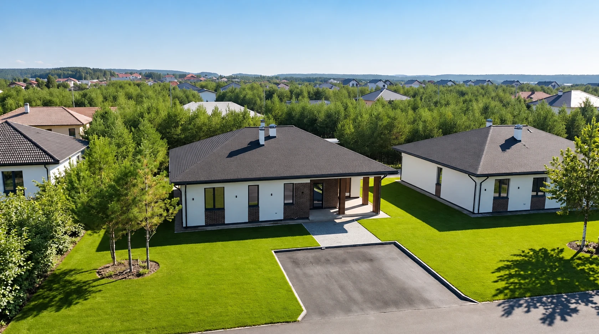
Планировка
Две спальни и мастер-спальня с собственной ванной комнатой и гардеробной. Кухня-гостиная — около 45 м², прихожая с местом для хранения, отдельная котельная и две большие террасы.
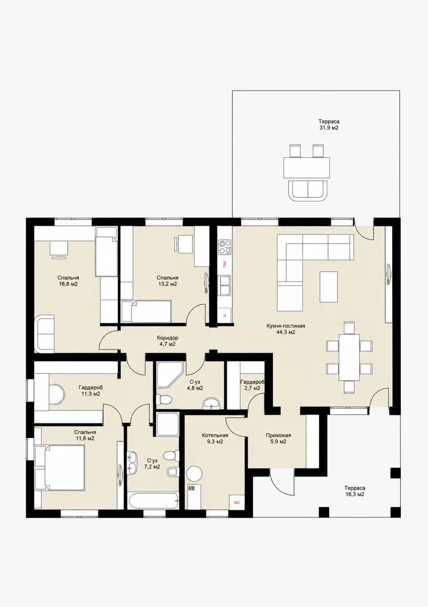
Открыть планировкуКоммуникации под ключ
- Электроразводка кабелем ГОСТ, электрокотёл Protherm и тёплый пол.
- Скважина, разводка холодной и горячей воды, водонагреватель 80 л.
- Вентиляция кухни, котельной и санузлов.
- Септик и отмостка.
Входит в стоимость
Дом с отделкой White Box, участок 8 соток, парковка на два автомобиля и дизайн-проект.
Инфраструктура
Дороги, электричество и водоснабжение готовы. У КПП — остановка автобуса № 120 «Екатеринбург — Косулино», от КПП ходит школьный автобус. Рядом школы, детские сады, магазины и развлекательные комплексы.
Записаться на просмотрКП «Рассоха Парк» · Тюменский тракт
12 700 000 ₽
- Площадь дома
- 140 м²
- Участок
- 6,08 сотки
- Отделка
- Под ключ
- Спален
- 3
- Санузлов
- 2
Детали
КП «Рассоха Парк» · Тюменский тракт · Проект М3
Дом 140 м²
Три спальни, кухня-гостиная с выходом на террасу и два санузла. Отделка под ключ с выбором материалов входит в стоимость. Газ на границе участка, в посёлке — асфальтированные дороги.
Предложение действует до 15 декабря 2026 года включительно.
Ремонт с выбором материалов
В стоимость дома и земельного участка входит отделка под ключ: керамогранит на полу, обои, межкомнатные двери и плинтусы. Покупатель может выбрать цвет обоев, керамогранит и двери из предложенных вариантов. Срок завершения отделки согласовывается при покупке.
Планировка
Три спальни, включая мастер-спальню, гардеробная, два санузла и отдельная котельная. Кухня-гостиная с выходом на большую террасу, панорамные окна.
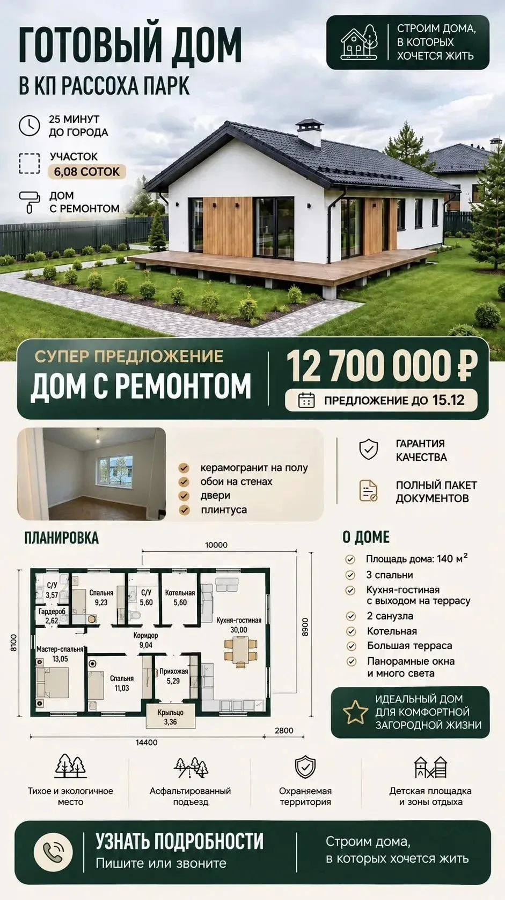
Открыть предложение и планировкуО посёлке
Газ проходит по границе участка. В КП «Рассоха Парк» · Тюменский тракт — асфальтированные дороги и охраняемая территория, детская площадка и зоны отдыха.
Записаться на просмотрПосёлок Бобровский
8 000 000 ₽
- Площадь с террасой и крыльцом
- 97 м²
- Участок
- 6,5 сотки
- Отделка
- Под ключ
- Спален
- 2
- Санузлов
- 1
Детали
Посёлок Бобровский · Отделка под ключ
Дом среди сосен с крытой террасой
Две спальни и кухня-гостиная 27,3 м² с панорамными окнами. На участке растут молодые сосны.
Записаться на просмотрПланировка
Спальни 12,21 и 9,90 м², гардеробная, душевая, тамбур и котельная. Крытая терраса 15,41 м², крыльцо 8,47 м².
 Открыть планировку
Открыть планировку
Фото дома


Дом и участок
Из кухни-гостиной с панорамными окнами видно сосны. На крытой террасе можно отдыхать и в дождь. Дом от застройщика, с отделкой под ключ и гарантией. Участок ровный, сухой и солнечный. Есть варианты с другими планировками.
Посёлок
До посёлка асфальт, на въезде планируют шлагбаум. Дороги чистит муниципалитет, вывоз мусора организован, дополнительных взносов нет. Рядом школьный автобус, транспорт до Южного автовокзала и магазины. Интернет — Ростелеком или К‑Телеком.
Что уже есть в доме
- Водяной тёплый пол с отдельными контурами и электрокотёл с управлением с телефона.
- Электричество 15 кВт, щиток с дифавтоматами, водонагреватель 100 л, утеплённая скважина с греющим кабелем и биосептик АСО‑1.
- Утеплённая монолитная плита, газоблок D500 300 мм и базальтовое утепление 100 мм.
- Металлочерепица «Монтеррей», утепление кровли 200 мм, снегозадержатели и водосток. Цоколь и отмостка утеплены.
Возможна льготная ипотека при соблюдении условий программы.
КП «Заповедник» · квартал «Гранат» · Челябинский тракт
17 800 000 ₽
- Площадь дома
- 115 м²
- Участок
- 9,2 сотки
- Отделка
- Дизайнерский ремонт
- Спален
- 3
- Санузлов
- 2
Детали
Дом 115 м² с дизайнерским ремонтом
Кухня-гостиная 32 м² с панорамными окнами, мастер-спальня со своей гардеробной и санузлом, крытая терраса. Газ заведён в дом.
Записаться на просмотр- Газ
- В доме
Планировка
Мастер-спальня, два полноценных санузла и три гардеробные.
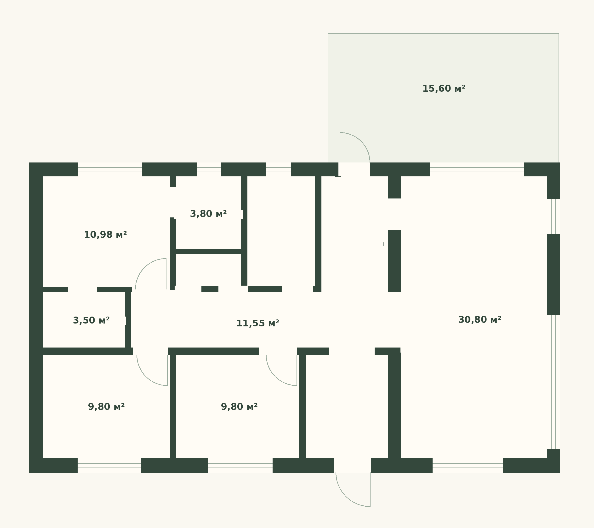
Открыть планировкуФото дома
Коммуникации
Газ, водяной тёплый пол с отдельными контурами, приточно-вытяжная вентиляция, скважина и энергонезависимый биосептик. Электрокотёл 15 кВт с управлением через приложение.
Посёлок
Охраняемая территория, видеонаблюдение и асфальтированные дороги. Есть магазины, школа, детский сад, детский центр, лес и водоём. До муниципальной школы ходит школьный автобус.
КП «Зелёные Кварталы» · Тюменский тракт · 2-я очередь
12 200 000 ₽
- Площадь дома
- 153 м²
- Участок
- 6,87 сотки
- Отделка
- White Box
- Спален
- 4
- Санузлов
- 2
Детали
КП «Зелёные Кварталы» · Тюменский тракт · 2-я очередь · White Box
Двухэтажный дом 153 м²
Четыре спальни, в том числе одна на первом этаже. Из кухни-гостиной можно выйти на крытую террасу. С задней стороны участка открывается вид на лес.
Отделка под ключ от застройщика — 13 000 000 ₽ с учётом доплаты 800 000 ₽. Срок работ — 1 месяц.
Записаться на просмотрПервый этаж
Кухня-гостиная с выходом на крытую террасу, спальня, санузел, гардеробная, котельная и подсобное помещение под лестницей.
Второй этаж
Мастер-спальня, две детские комнаты, гардеробная и большой санузел. Из окон открывается вид на лес. Есть люк с лестницей на крышу.
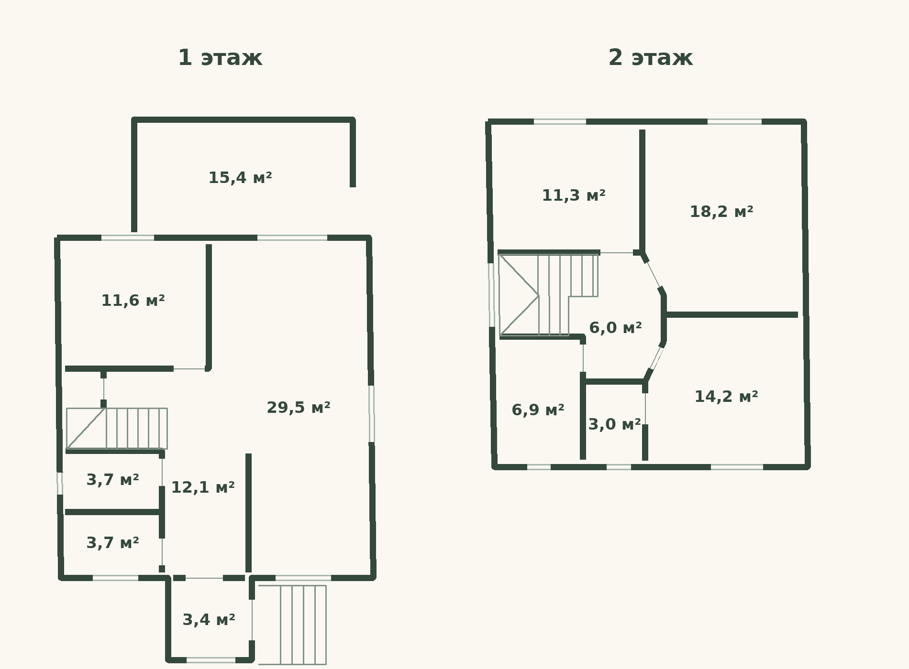
Открыть планировку обоих этажейУчасток и посёлок
Сделана отмостка, выведена вода на улицу и предусмотрены наружные розетки. В посёлке закрытая территория, КПП, охрана, асфальтированные дороги и подземные коммуникации.
Условия покупки
Помогу оформить ипотеку бесплатно. Покупатель комиссию не платит.
КП «Зелёные Кварталы» · Тюменский тракт
13 490 000 ₽
- Площадь дома
- 198,3 м²
- Участок
- 8,8 соток
- Отделка
- White Box
- Спален
- 4
- Санузлов
- 2
Детали
КП «Зелёные Кварталы» · Тюменский тракт · White Box
Дом 198,3 м² с гаражом
Двухэтажный дом 2025 года постройки. Четыре спальни, гараж с автоматическими воротами и крытая терраса с видом на лес.
Записаться на просмотрПервый этаж
Кухня-гостиная с выходом на крытую террасу, спальня, санузел, гардеробная и подсобное помещение под лестницей. В гараже предусмотрен слив в канализацию. Котельная расположена в зоне гаража.
Второй этаж
Мастер-спальня с гардеробной, две детские комнаты, большой санузел и люк на крышу.
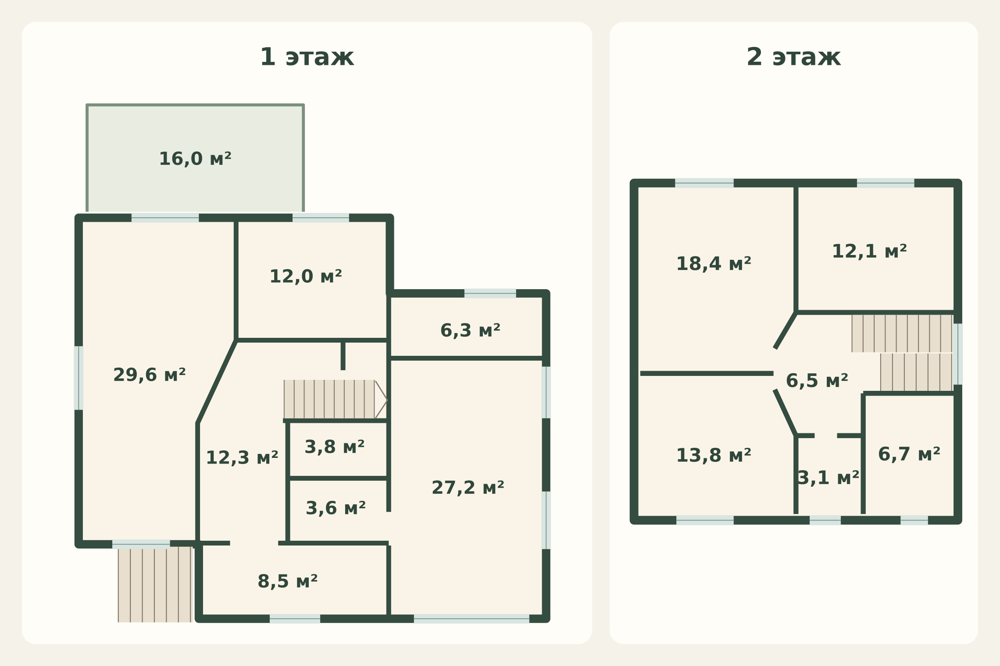
Открыть планировку обоих этажейФото дома


Участок и коммуникации
Участок ИЖС с видом на лес. Сделана отмостка, выведена вода на улицу и предусмотрены наружные розетки. Стены из газоблоков, электрическое отопление, скважина и септик.
Посёлок и транспорт
Закрытая территория, охрана, КПП, асфальтированные дороги и подземные коммуникации. До города 4 км. Рядом магазин, аптека, детский сад, школа, остановка общественного транспорта и железная дорога.
Условия покупки
Помогу оформить ипотеку бесплатно. Покупатель комиссию не платит.
Примерка дома
Какой вариант вам подходит?
Укажите бюджет и пожелания.